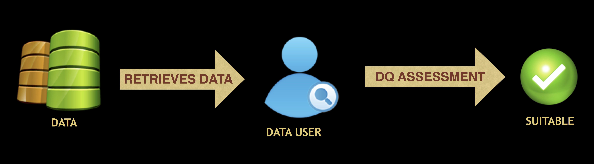
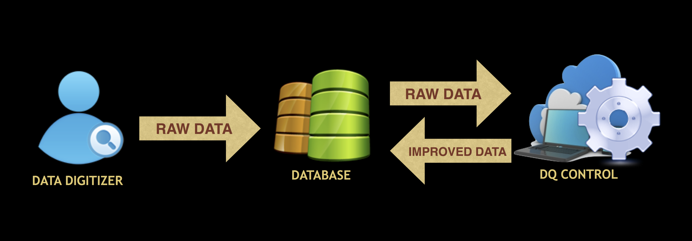

Introducing a
Conceptual Framework on
Biodiversity Data Quality (DQ)
TDWG/GBIF Biodiversity Data Quality Interest Group
Task Group 1
Created by Allan Koch Veiga and Antonio Mauro Saraiva
The Framework Main Targets:
To enable the ASSESSMENT of fitness for use of biodiversity data.
Enable data users to judge the status of quality of data and their fitness for use in specific contexts.
To enable the MANAGEMENT of fitness for use of biodiversity data.
Enable data custodians and publishers to improve the status of quality of data using quality control and quality assurance approaches.
DQ ASSESSMENT
To judge the status of quality in a specific use case context
Are these data fit for use in a National Species Checklist context?
DQ ASSESSMENT
To judge the status of quality in a specific use case context

Are these data fit for use in a Niche Modeling context?
DQ MANAGEMENT
To improve the status of quality
DQ Control Approach
DQ MANAGEMENT
To improve the status of quality

DQ Assurance Approach
FRAMEWORK COMPONENTS:
1. DQ NEEDS
Define the meaning of DQ in a given context according to data user's perspectives.
2. DQ SOLUTIONS
Define the methods and mechanisms to meet DQ Needs.
3. DQ REPORTS
Define the status of quality of a data resource according to a given DQ Needs.


1. DQ NEEDS COMPONENTS:
1. Use Case: A data use context.
2. Valuable Information Elements: A set of information valuable in the Use Case context.
3. DQ Measurement Policy: A set of DQ Dimenions to measure the status of quality in the Use Case context.
4. DQ Validation Policy: A set of DQ Criteria to validate if the status of quality is suitable in the Use Case context.
5. DQ Improvement Policy: A set of DQ Enhancements to improve the status of quality in the Use Case context.
2. DQ SOLUTIONS COMPONENTS:
1. DQ Measurement Method (Specification): A manner of proceeding, especially an orderly, logical, or systematic way of instruction for
DQ measurement regarding a DQ Dimension definition.
2. DQ Validation Method (Specification): A manner of proceeding, especially an orderly, logical, or systematic way of instruction for
DQ validation regarding a DQ Criterion statement.
3. DQ Improvement Method (Specification): A manner of proceeding, especially an orderly, logical, or systematic way of instruction for
DQ improvement regarding a DQ Enhacement description.
4. Mechanism: An actor (software, hardware or person) that implements and executes DQ methods.
3. DQ REPORTS COMPONENTS:
1. Data Resource: A Single Record or Dataset.
2. DQ Measures: A set of relevant DQ Measures assertions assigned to a Data Resource.
3. DQ Validations: A set of relevant DQ Validations assertions assigned to a Data Resource.
4. DQ Improvements: A set of relevant DQ Improvements assertions assigned to a Data Resource.

How to define a DQ Profile?
1. Define a Use Case
Use case name:
2. Define a set of valuable Information Elements (IE)
IE:
3. Define a set of Contextualized DQ Dimensions
of of
Contextualized Dimension:
4. Define a set of Contextualized DQ Criteria
5. Define a set of DQ Enhancements
Defined DQ Profile
Use Case:
No Use Case defined.Valuable Information Elements:
No Valuable Information Element defined.DQ Measurement Policy:
No DQ Dimension defined.DQ Validation Policy:
No DQ Criterion defined.DQ Improvement Policy:
No DQ Enhancement defined.